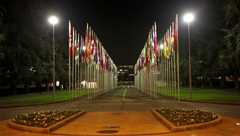

分析：10年後の国連
OCHAが運営するIRINニュースの「人道支援の将来(Humanitarian Futures)」シリーズからのご紹介です。自然災害や紛争の際、ひとりでも多くのいのちを救い、その尊厳を守るため、私たちはどう変わらなければならないのでしょうか？キーワードは予見性、戦略性、イノベーション、民間部門とのパートナーシップ、官僚主義の排除、リーダーシップ強化、リスクをあえて受け入れるセキュリティ管理など。国連による緊急人道支援のあるべき姿について、実務家とのインタビューを通じて率直な現状評価と具体的な提言がなされています。また2016年には世界人道サミットがトルコ・イスタンブールで開催されることが決まりました。OCHA神戸事務所としても、ぜひ他の人道パートナーと一緒にこうした問題を考え、国際人道支援の将来像について積極的に発信し、議論に貢献していきたいと思っています。
分析：10年後の国連
2013年7月31日付 ダカール発
現在、国連などの人道援助機関は人道ニーズの際限ない増大に直面しています。実際国連は、自然災害の記録数が過去20年で倍増したとしています。いわゆる西側諸国に対して「東」や「南」の国々へと国際的なパワーシフトが起こる中、国連機関と上位10位に数えられるような国際NGOによる支配的とも言える立場は徐々に崩れつつあります。他方このように国際人道支援をめぐる光景が大きく変化しつつあるにもかかわらず、人道ニーズと支援活動のギャップは依然として埋まることがありません。
そんな中、将来災害をもたらし得る様々なリスクが浮かび上がってきています。例えば、新たな疾病の集団発生、水不足の拡大、巨大都市を襲う危機、サイバー犯罪、生物・化学兵器など。人道支援関係者の多くにとって、こうしたリスクに対処する準備がいまだ十分にできているとは言えないでしょう。私たちの未来を、人道という側面からより良いものとしていくためには、私たちのアプローチ、あるいは組織構造やとるべき姿勢といった面で、どのような大幅な変化が求められているのでしょうか。IRINが関連問題を扱うアナリストや国連職員に尋ねました。
人道状況への対応を改善するため、国連は過去10年間にわたって重要な改革を進め、その多くがポジティブな結果をもたらしました。今や紛争下における「文民の保護」(Protection of Civilians)は、国連の活動においてより中核的な位置を占め、国内避難民への支援も見落とされることはなくなりました。国連人道問題調整事務所（OCHA）など幾つかの機関は、より多様な人道パートナーと連携するようになり、受益者への説明責任という課題が（ソーシャルメディアの普及によって、支援状況がリアルタイムで評価の対象となることもあり）ますます重要なものとなっています。
国際的な規範やガイドラインも強化されました。学習ネットワークALNAPの研究・コミュニケーション部長、ポール・ノックス・クラーク氏は、早期警報段階からニーズアセスメント、あるいはプログラム実施から事後評価まで、いわゆるプログラム・サイクルのあらゆる段階で、国連機関やNGOによる業務の改善が見られると指摘しています。「アセスメントの際に各機関が連携せず、やり方もバラバラなどといった課題が以前から指摘されているが、こうしたもののうち多くについては対応が進んでいる」と言います。
またタフツ大学で国際ファインシュタインセンター長を務めるピーター・ウォーカー氏によれば、国際人道支援は、断片的な逸話ではなく確固とした根拠を基に実施されるようになってきており、このことは「ヘルスケアのあり方について1970・80年代に起こった変化と同様の重要なシフト」であると考えられています。
また今では、緊急援助調整官や人道調整官の役割がより尊重されるようになりました（少なくとも、彼らが主催する会議に各機関のトップが参加するようになっています）。また資金供給システム全体もさらに透明化が進みました。国際援助透明性イニシアティブ(IATI)に160にものぼる援助機関やドナーが署名し、いわゆるクラスター・アプローチやプール基金といった仕組みが、国連機関の体制作りや調整のあり方といった点で改善をもたらしました。
しかし人道分野に関してこれまで起こってきた国連の変化を振り返ってみると、そのほとんどが大規模な構造的変革を行ったり、取られるアプローチや調整の過程、あるいは支援に取り組む姿勢といったものを包括的に見直すというのではなく、個々のイニシアチブを少しずつ徐々に積み上げるというかたちであったとの批評もあります。多くの評価報告書が、国連がもっと先見性を備え、より戦略的かつ革新的になるよう訴えており、また将来の危機を予測しこれに備えるためにも、数多くの国連機関の力を集約するよう求めています。
確かにこうしたことに取り組む個別のイニシアチブもあります。例えばOCHAが中心となって進める 「トランスフォーマティブ・アジェンダ (Transformative Agenda)」は、ハイチ大地震とパキスタン洪水の教訓を踏まえ、説明責任を明確化することや戦略的な支援計画の策定、あるいは調整過程やリーダーによる指導力の向上を進めようとするものです。しかし必要とされている革命的な変化はまだ起きていないと主張する専門家もいます。
長らく国連で人道支援の指揮を取り、現在はキングスカレッジに設置されている「将来の人道支援プログラム」(Humanitarian Futures Programme：HFP)のトップを務めるランドルフ・ケント氏は、こう問いかけています。「現在も存続している民間企業で、ビジネスモデルや経営プロセスの抜本的な変化を60年間に一度も経験していないところなど、果たして世界にあるでしょうか。」
今回のインタビューを通じて、以下のような提言が専門家や国連職員から提示されました。
閉鎖的な会員制クラブの開放
人道分野における最重要アクターは、いまだに実際の位置付けとして、あるいは皆が思い描く前提としても、多分に西側社会であり、いわばこの西側諸国クラブの内と外という「二層システム」を作り出してしまっていることに批判があります。また人道シンクタンクDARAのトップであるエド・シェンケンベルグ・ヴァン・メイロップ氏は、草の根団体や市民団体、ディアスポラ（離散民）や地域社会といった、必ずしも公式な場面で登場することのない人道コミュニティによる貢献を国連は忘れがちだと言います。「まだ、いわゆる『人道カントリーチーム』が人道支援のすべてを担っていると思いこんでしまっている人たちが沢山いるのです。」
そうした閉鎖的クラブのルール自体を変更する必要について必ずしも認識しないまま、他のアクターと連携しようという試みを果敢に行っている機関もあります。「従来からの人道コミュニティは、排他的な会員制度を形成し、伝統的メンバー以外のアクターに、自分のクラブに入るよう勧誘しています。そうした国々が掛け声に振り向いて、しかし得られた応えが「ノー」だったとしても驚く方がおかしいのです」。ヴァン・メイロップ氏は、ソマリアでクラスター・システムの枠外で活動することを決めたトルコの例を引き合いに出して、こう述べています。また国連で26年間働いた経験を持つフェインスタインセンターの上級研究員、アントニオ・ドニーニ氏は、中国やカタールのような新しいアクターが既存クラブのルールに従うとは限らないことを強調しています。
「これらのルールから一度開放され、またこれまでになくオープンなかたちで議論し直す必要がある」と、ウォーカー氏は言います。 それには国連機関や9つ程の大規模な国際NGOなど、伝統的なアクターが様々なものから「手を離す」必要があると彼は指摘します。「これまでの動きは、常に権力の分散ではなく、集中へと向かうものばかりでした。しかしあらたな議論は、過去30年間にわたって行われてきた人道支援のあり方自体に挑戦することとなるでしょう。」
中立性よりも正義の実現を優先させるNGOがあるように、（既に弱まっているとの指摘もある）人道原則自体を損なうことなく、異なる視点を認めるよう努め相互理解を達成するべきだ、と欧州連合の援助機関ECHOの西アフリカにおけるトップ、シプリアン・ファーブル氏は指摘しています。
あなたは私のために何ができますか？
人道システムの一部をなす力の不均衡を正すという意味では、人道支援の「提供者」と「受益者」の間で新たな関係が築かれなければならないとケント氏は言います。「私たちは、『かわいそうな被害者像』から一応離れることは出来たものの、まだ根本的に不平等感を助長するようなシステムで物事が動いています。我々にはもっと双方向性のあるもの、こちらが相手に何かを提供し、代わりに相手もこちらに何かを提供するというような、いわばギブ・アンド・テイクのシステムが必要なのです。」例えば、ガーナでは気候変動への適応というすばらしい事業が進行中ですが、そこで築かれた専門知識を英国やインドにどのように応用できるのかを問う人が現れてしかるべきなのです。「その方がより面白い視点ですよね。」
将来を見据えて人道支援に関わる人々は、官民パートナーシップや様々なビジネスモデルを試み、変革を許容し、それに伴うリスクも甘受しなければなりません。「自国内にこれ以上国際NGOを参入させたくないと思っているような政府でも、自国での継続的なビジネスに関心を示す民間企業はぜひ受け入れたいと思うかもしれません。例えば保健医療を促進する上では、ジョンソン＆ジョンソン社の方が、NGOと同様あるいはそれ以上に効果的に機能するかもしれませんね。」とケント氏は問いかけます。「私たちは、どうすればビジネスが持続可能性やレジリエンス（強靭性）の促進に貢献できるのか、きちんと理解しているでしょうか。OCHAは、民間部門や他の非伝統的なアクターがイノベーションや革新的な仕事の仕方を提案し、いかにしてこれらが危機の予防や備え、緊急時対応や危機後の復興に貢献し得るかを示すため、例えば世界経済フォーラム等と共同してプラットフォームを設置出来ないものでしょうか。」
OCHA職員アンディ・ソウ氏は、国連機関こそ「人々がリスクを取ることを支え、良いアイデアに投資する」必要があると述べています。「ほとんどの良いアイデアは本部からではなく、各国や地域の現地で働くスタッフから出てくるものです。」
世界食糧計画など一部の機関は、既にこうした議論に参画しています。どのようにすれば市場を使って食糧支援を届けられるか。また現金その他を用いた場合、いかなる支援が可能なのかという課題に組織をあげて取り組んでいます。「これは、食糧や保健医療という分野で支援に携わるものとして既成概念に異議を唱えるものです。非常に興味深い問題ですが、私たちはまだ、こうした議論の緒に就いたばかりです」とウォーカー氏は述べています。
啓発し、予測し、リードする
近年多くの専門家たちが、国連は人道危機におけるリーダーシップやアドボカシー、戦略作りといった面で改善をもたらすよう注力する必要があると強調しています。「世界規模で支援の質を向上させようとするのであれば、国連機関は今後10年間でこうした問題に取り組まなければならない」と海外開発研究所(ODI)の人道政策グループ長、サラ・パントゥリアノ氏は指摘しています。
このインタビューに応えたある国連職員は、もし国連機関が協働して共通の基準を設け、支援の質を監視するとともに教訓を広め、災害リスク軽減や早期警報、あるいは有事に対する備えの進展具合を監視し向上させることができたならば「それこそ注目すべきこと」と言っています。こうしたことを実現するためには、ビジョンを伴った思考が求められているだけでなく、（例えばスタッフの採用や機器の調達には、際限のない手続きとフォーム入力が必要といった）日々の管理業務負担を軽減し、より長期的な計画作りのための余地を作り出すことが必要でしょう。2011年度にHFPが6つの国連カントリーチームを対象に行った研究によれば、各機関のリーダーたちは、その時間の大半を短期的な計画の策定に費やさざるを得なかったと報告されています。
国連機関が現地で支援活動を実施していることにより、例えば現在シリアで人道アクセスをめぐり起こっているような人道原則に関わる複雑な問題について、国連のアドボカシー能力がそがれてしまっているか否かについては意見が分かるところです。こうしたことは状況次第だとフォン・メイロップ氏は言います。政府が紛争の当事者であるシリアのような文脈では、もし現地での支援活動実施を目的としないならば、強力でパンチの効いたアドボカシーが最終的にはより効果をあげるかもしれません。「ナイーブを気取ることはやめましょう。結局のところ政治課題がすべてを凌駕しているのですから。このような文脈では、説明責任の問題は、単に被災者とコミュニケーションをとるといった範囲を大きく超えることとなります。それは被災者の関与、参加、そして選択に関わる大きな問題です。しばしば犯罪に巻き込まれるおそれすらあるような危険なキャンプに住むことを、受け入れ国政府によって余儀なくされているシリア難民がその例です。」
「説明責任を果たすということは、こうした人々を保護し、その尊厳を守るため、最善の方策を編み出していくということを意味するのです。」
これまでに述べた全ての分野で、より良いリーダーシップが発揮されるには、支援活動が真に一貫性のあるものへと向かう必要があるでしょう。ある国連職員は「そもそも私たちは人間のニーズというものを各機関毎に分けて考え、そして各機関がそれぞれ異なる枠組みで説明責任を果たすよう求められています。これではだめなのです」と指摘しています。確かに諸機関をより少ない枠組にまとめられれば、組織の役割分担にまつわる多くの問題を解決出来るでしょう。しかしながら、そのような野心的なプロジェクトは、国連加盟国の主導で行われなくてはなりません。ですが「加盟国自身がこれを望まないのです。 彼らこそが、個々の国連機関に影響力を持つことを望んでいるからです。」
確かにクラスターを活用した支援活動の調整が更に細かい役割分担を推し進めてきたのですが、一方で多分野にわたる資金供給をもっとたやすく出来るようにすべきでしょう。彼はこうも指摘しています。「資金供給面での改革は遅れています。私たちはこの10年間、相変わらず同じ統一アピールプロセス(CAP)を続けているのです。このような問題はこれまでに解決していてしかるべきでした。」
岐路に立つセキュリティーの問題
インタビューに応えた国連職員の何人かは、国連が持つ安全保安上のプロトコールや政策についても、変革そしてリスクを取るということが求められていると述べています。特にイラク、アフガニスタン、ソマリアといった複合的緊急事態(Complex Emergencies)に際して、国連のリスク回避政策の結果、支援を必要とするコミュニティへのアクセスが著しく制限され、国連の役割も縮小せざるを得なくなってしまっていることが指摘されています。
こうした危機の際、もし国連がそこに留まり活動を続けるためのより柔軟な方法を見い出せなければ「国連自体が、政治的危機に対して役割を失う可能性がある」と、パントゥリアノ氏は警告しています。こうした現象を別の専門家は「結局現場にいるのは、国境なき医師団(MSF)と国際赤十字委員会(ICRC)だけ」と評しました。
セキュリティ上の意思決定について、OCHA西アフリカ地域事務所長であるアレグラ・バイオッチ氏は以下のように述べています。「私たちは、敏捷、柔軟、かつ迅速でなければなりません。私たちが必要としているのは、各部局に散らばることのない、そして現場の活動に直結した、あらゆるリスクに関するより優れたインテリジェンスです。安全を脅かすような出来事が起こると、何ヶ月も、そして時には何年も活動を後退させてしまいます。国連はセキュリティ管理に関して、岐路に立っていると思います。私たちがどこまでリスクを受容出来るかという問題に取り組むだけでなく、セキュリティ管理システム自体を改善する必要もあるのではないでしょうか。」
そしてシリアこそ「重大な分岐点」であると、フォン・メイロップ氏は言います。「武力紛争下において、より効果的に対処する方法を見つけるためのきっかけとすべきです。こうした課題の中には、国連による調整機能も含まれます。」
再び説明責任について
国連がリーダー的役割に留まるという意味では、クラウドソーシングやソーシャルメディアを通じて集まる膨大な情報を操り、精査し、認証していく方法を探すという必要もあります。そうすることで、被災コミュニティ、政府当局、そして支援機関が、こうした情報をよりよく利用できるようになります。ウォーカー氏は、せめて10年後には、危機的状況において、食糧やシェルターと同様、情報を得ることが大切な権利の1つであるということに支援機関側が気づいていなくてはならないと述べています。「これこそまさに、OCHAの任務や使命に関わることなのです」
では国連がすべきでないこととは？
今後10年間で、国連やその他の人道支援機関は、自らがすべきこととそうでないことをより明確に定義する必要があります。「私たちは何をするために存在するのか、国際人道システムとは何なのか、そのシステムの中にいるのは誰で、どんな役割を担っているのかについて、もっと議論がなされる必要がある」とノックス・クラーク氏は言います。「もし国連やその他の人道支援機関を、あらゆる災害に対応し、出来る限り全ての人命救助にあたるような世界的消防隊とみなし、そこに危機予防や早期復興、さらにレジリエンスを促進することも加えるならば、それはとても野心的で、今よりはるかに多くのキャパシティが必要になります。」しかし、被災国が対応出来ない、或いはそうする意思がないような時に一歩踏み出すというような形に限定して、国連が役割を演じるのならば、状況はよりマネージしやすいものとなるでしょう。
ウォーカー氏もこの見解に同意しています。人道支援と定義されるものと、その実際の使われ方との間のミスマッチに、言わばケリをつけなければならないのです。「人道支援の核心部分というは、暗闇の中に光をもたらすことです。しかし同時に、私たちが出来るのはあくまでも対処療法に過ぎないと認めることでもあります。」これには恐怖や性的暴力を含む一切の暴力から人々を保護することも含まれます。しかし、（例えば児童保護など）一部の分野で改善が見られるものの、こうした分野で更なる前進を遂げるには、まだリーダーシップも、そしてひとつの機関に委ねられるべき一貫性も欠けています。「しかしこのことは、資金がどこに充当されているかということとは全く異なる問題です。」このことを「開発イニシアティブ」の資金調達専門家、オリバー・バトソン氏はこのように表現しています。「スーダンで5億ドル規模のプロジェクトを10年間実施するのと、5,000万ドル規模の単年度プロジェクトを10件実施するのとでは、かなり違ったプログラム作りが求められるでしょう。」
上位10番目に入る人道支援の被支援国や地域のリストは、スーダン、パレスチナ自治区、ソマリア、アフガニスタンなど、過去10年間で殆ど変化しませんでした 。政治主導で行われなければならない活動で、長期かつ柔軟な資金提供を必要とするもの、まさにそういうところにこそレジリエンスを巡る議論を持ち込むことがふさわしいとバトソン氏は言います。ケント氏曰く、「国連は、実に重要な役割を担うことができるはずなのですが、それは今国連が担っている役割とは違うものであるべきなのです。」
政府が主導してレジリエンス強化を
バイオッチ氏は、国連の人道援助機関だけではレジリエンスを巡る議論を前に進めることができない、と指摘しています。国連開発計画や国連事務局の持続可能な開発部、国際金融機関、地域機構や各国関係者などを含め、国連開発グループ(UNDG)全体の関与が必要です。アジア防災・災害救援ネットワーク(ADRRN)のコーディネーター、ミヒール・ジョシ氏は「兵庫行動枠組は、2015年以降定められる開発目標のそれぞれに貢献しなければなりません。さもなくばレジリエンスを巡る議論は行き場を失うことになるでしょう」と言っています。
それには多くの場合、各国の対応能力に対するサポートが必要になります。「私たちは、口では各国政府と連携したい、真のパートナーシップを構築したいと言いますが、本当にそうなっているでしょうか」と、バイオッチ氏は問いかけます。「積極的に関与する政府があれば、私たちは彼らこそが干渉していると言います。私たちはこの点についてひどく矛盾しているのです。」支援をあまり必要としない国もあります。モザンビーク、インドネシア、パキスタン、フィリピンなどの国々は、大規模災害に対応する能力を大幅に向上させてきています。むしろこうした国々では国連機関は一歩引いて、必要とされるサービスを提供することに徹する必要があるのです。
マーシー・マレーシアというNGOのジェミラ・マフムード元代表は「先進国にある多くの援助機関が、能力構築はワークショップ開催を通じて行うものという伝統的な考え方を持っている」と言います。「しかし必要なのはそんなものではありません。本当に必要なのはお金であり、さらには地方自治体に人を出向させて、組織の内部から能力強化を行うことなのです。」
最終的には、能力構築を支援することも、レジリエンスに焦点を当てることも「ECHOや国連、世界銀行が決めることではなく、各国政府が決めること」だと、ファーブル氏は指摘しています。「これらに取り組もうという政治的意思がない限り、どれだけお金をつぎ込んでも何も変えることは出来ません。変化は、内部から起こらなければならないのです。」
原文（英語）>>